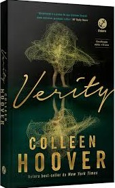
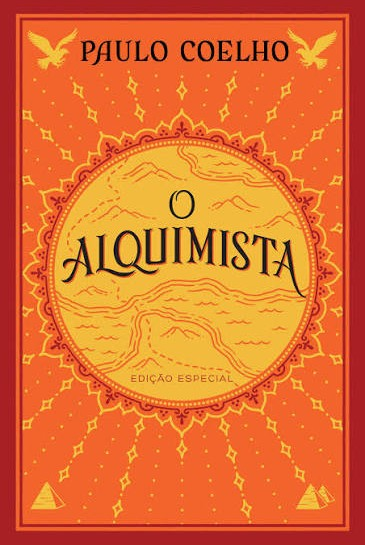
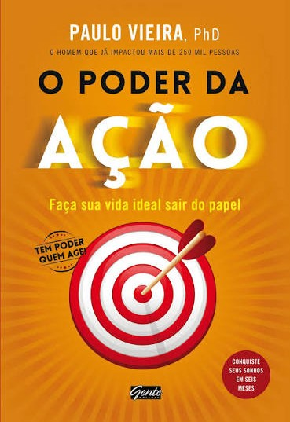
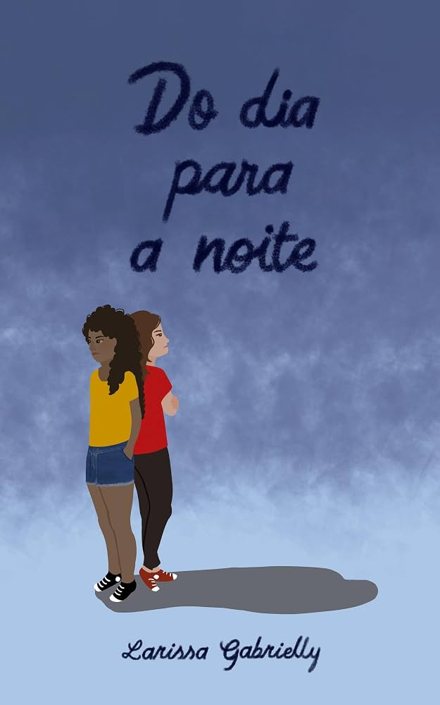
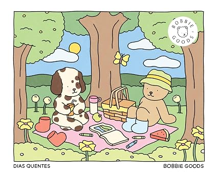
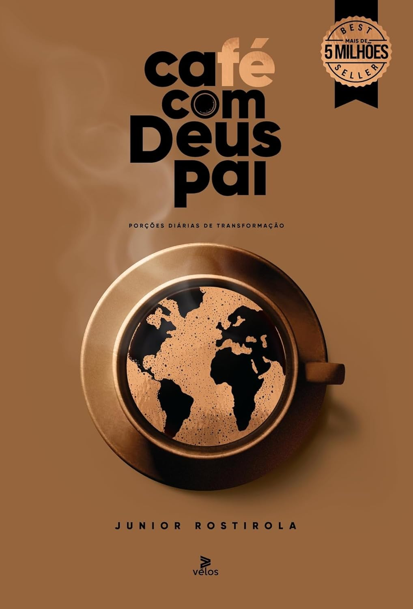
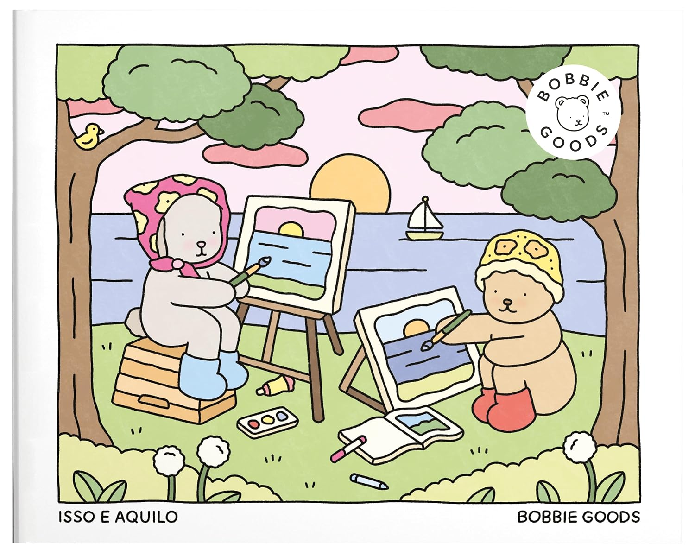
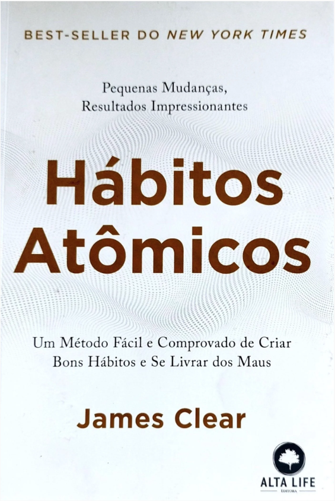

A história acompanha Lowen Ashleigh, uma escritora que está passando por sérias dificuldades financeiras. Sua vida muda drasticamente ao receber uma proposta irrecusável de Jeremy Crawford: terminar os três últimos volumes de uma série de livros de enorme sucesso escrita por sua esposa, Verity Crawford, que ficou gravemente incapacitada após um misterioso acidente de carro.


Enjoy





Esta seleção de livros une a ficção, o autoconhecimento e a criatividade em uma jornada que transforma tanto a mente quanto a rotina do leitor. Enquanto o suspense e o drama de Do dia para a noite instigam a curiosidade através de uma investigação misteriosa, obras de desenvolvimento pessoal como Hábitos atômicos e o devocional Café com Deus pai oferecem ferramentas práticas e espirituais para organizar o cotidiano e promover pequenas e constantes evoluções diárias. Para equilibrar a mente e aliviar as tensões dessa rotina de crescimento, o universo lúdico de Bobbie Goods entra com Dias quentes e Isso e aquilo, proporcionando momentos de leveza, presença e terapia visual através da arte de colorir. Juntos, esses títulos funcionam como um guia completo para quem busca misturar o entretenimento com o bem-estar mental e espiritual.